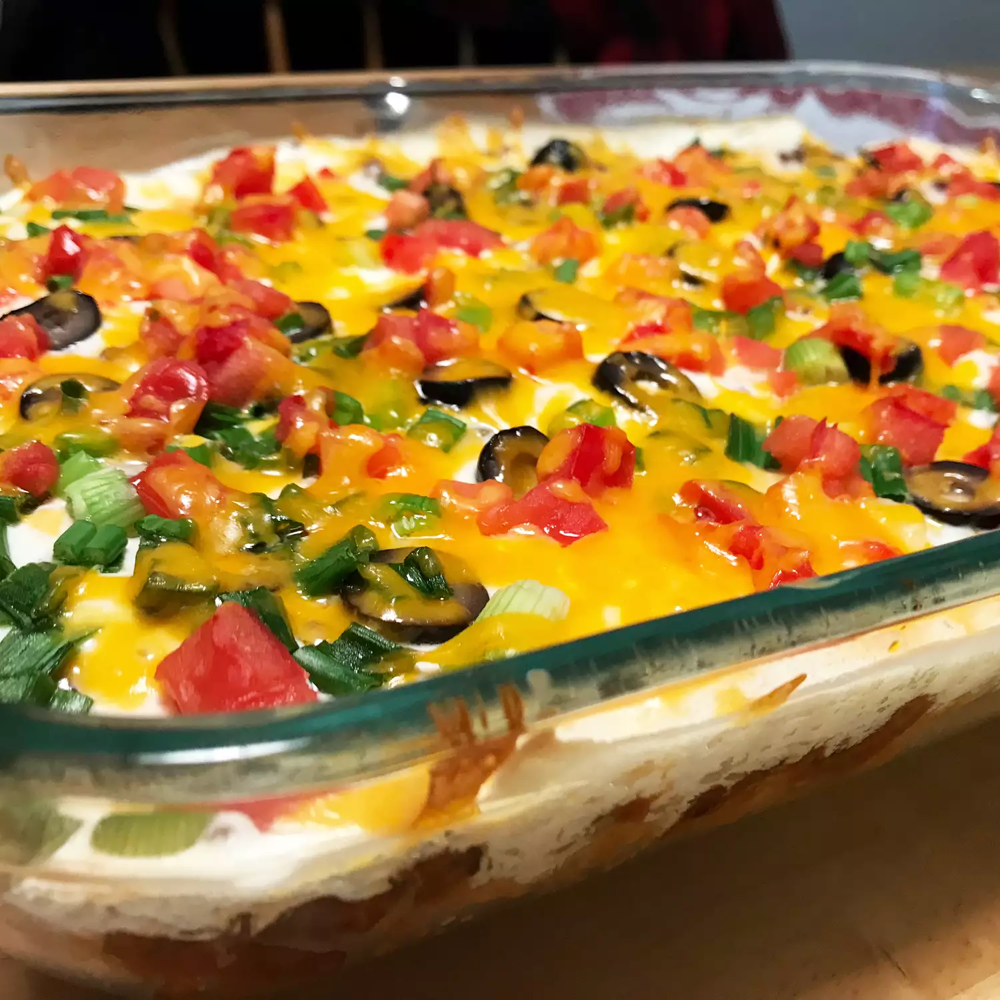

Mexican Casserole

Description
This Mexican casserole is easy to make and very tasty.
I often substitute with ground turkey and low-fat dairy products, and it's still delicious!
Serve this casserole with chips, salsa, and green salad.
Ingredients
- 1 pound lean ground beef
- 2 cups salsa
- 1 (16 ounce) can chili beans, drained
- 3 cups tortilla chips, crushed
- 2 cups sour cream
- 1 (2 ounce) can sliced black olives, drained
- ½ cup chopped green onion
- ½ cup chopped fresh tomato
- 2 cups shredded Cheddar cheese